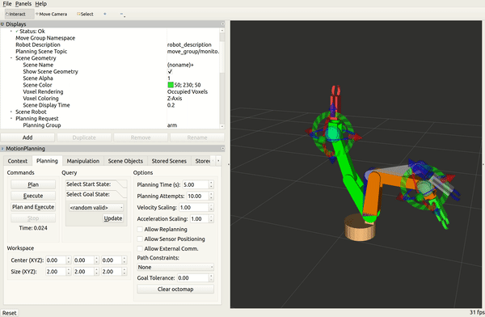
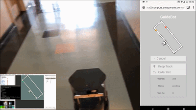
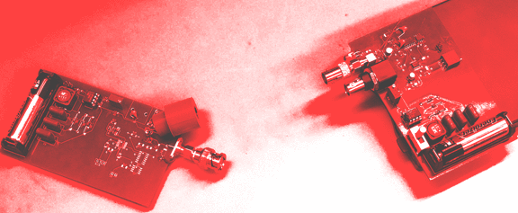

Xun Lin
ECE Graduate Student
Contact Info
Technical Skills
Education
-
Boston University
Master of Scicense in Electrical and Computer Engineering Specialization in Robotics
Specialization in Data
Current GPA: 3.7/4.0
-
Oklahoma State University
Bachelor of Science in Electrical Engineering
Wentz Research Scholar, Dean’s honor roll (Four semesters)
GPA: 3.7/4.0
-
Southwest Jiaotong University
Bachelor of Engineering in Electrical and Information Engineering
National Scholarship of China, Institute Grand Scholarship (Two semesters)
GPA: 3.7/4.0
Research Experience
-
Visual Computing and Image Processing Lab, OSU）
- Designed prototypes for autonomous mobile robot
- Extract meaningful information regarding indoor environment with Orbbec astra depth camera
- Analyzed the data by intelligent algorithms to solve 2D SLAM Problem
Projects
-
Robotic Arm Control Simulation Demo
- Technology stack：ROS, Gazebo, Pointnet, Moveit
-
[Objective] Performing a robot arm simulation in gazebo that automatically grab objects for users when it receives speech commands
[Team] With three ECE graduates
[Contribution] Implemented arm motion planning with Kinematics and Dynamics Library. Applied deep learning directly on point sets for object segmentation and recognition. Bridged Alexa with ROS and implemented speech control for user interface.

-
Indoor Public Place Guide Robot Demo
- Technology stack：ROS, Graph SLAM, Sparse Bundle adjustment(SBA), AMCL
-
[Objective] Developing an autonomous robot with a camera on it to navigate in large, unknown and dynamic spaces
[Team] With one undergraduate
[Contribution] Analyzed depth camera data to get 2D grid map layouts of large scale unknown environments. Optimized the map using loop closure and SBA. Implemented robot localization using a particle filter to track the pose of a robot against a known map. Localized the robot during navigation by Implementing D* algorithm. Built a robot-server-Webapp communication system using AWS.

-
Sub-nanosecond Rise-time Diode Laser
- Technology stack: Avalanchediode, Phtodiode
-
[Objective] Performed a time-of-flight laser measurement by using an instrument of laser and photo diodes and avalanche driving mechanism to achieve the extraordinary rise time necessary for accurate measurements.
[Team] With two undergraduates
[Contribution] Used BJT avalanche operation switching pulse-forming network quickly enough to achieve sub-nanosecond rise-time.Generated an 11ns pulse with no greater than 820 ps rise and fall times at a steady 32.768 KHz repetition rate.

Relevant Coursworks